A Surfer’s Journal
or
View from the Tube
Brainiac B. Stnava
hours before the sun
alarm buoy wind
coffee oatmeal nuts friends boards
leash wax suit boot gloves?
surfing \(\leftrightarrow\) philly
the quiver: firewire dominator

the quiver: firewire dominator

the quiver: firewire vanguard: 5’7
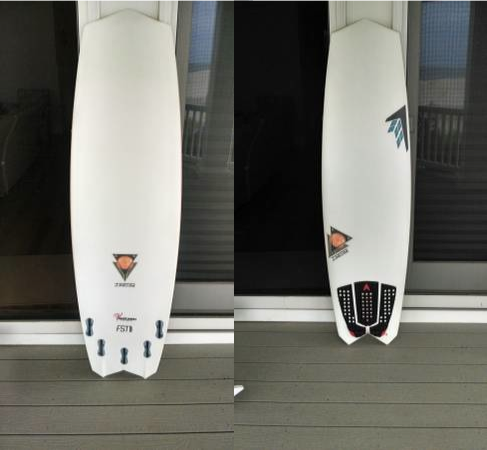
the quiver: zippi fish: 5’7
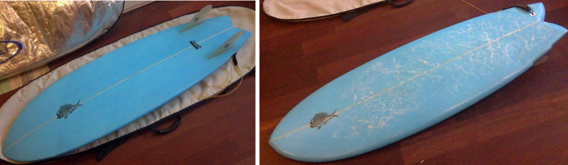
the quiver: zippi fish: 5’7

the quiver: zouvi blowfish 5’8
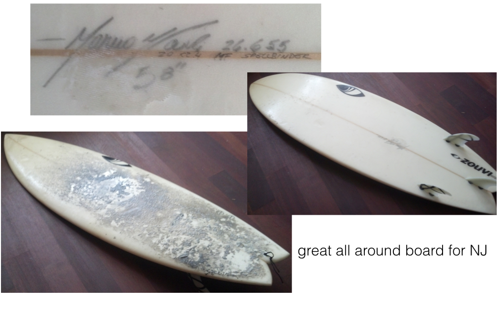
the quiver: wynn 5’8

the quiver: 6 x 19 x 2.5 wynn

the quiver: 6 x 19 x 2.5 wynn

the quiver: 70’s twin 5’4 & thick

the quiver: 6’3 bill johnson

retired now but served well
memorable waves from the past
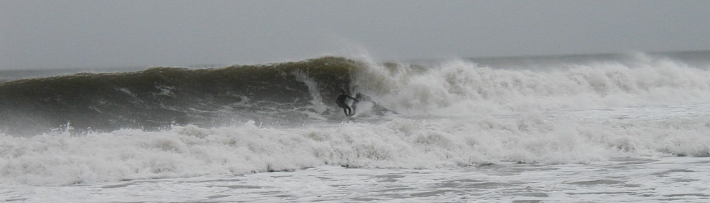
November 2004: Casino Pier
memorable waves from the past
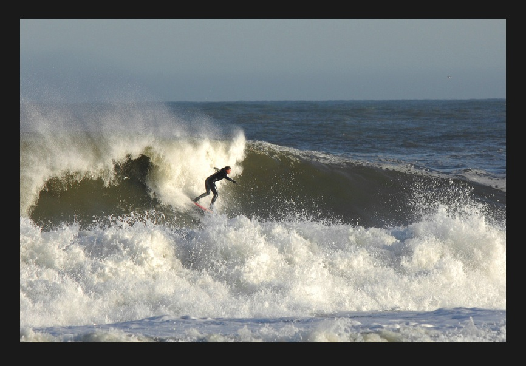
Squan
memorable waves from the past
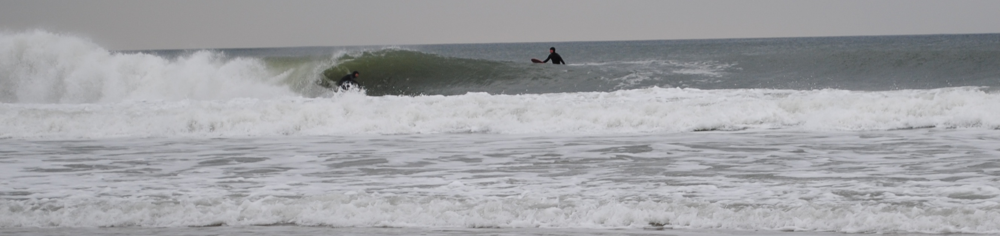
Daisy
memorable waves from the past
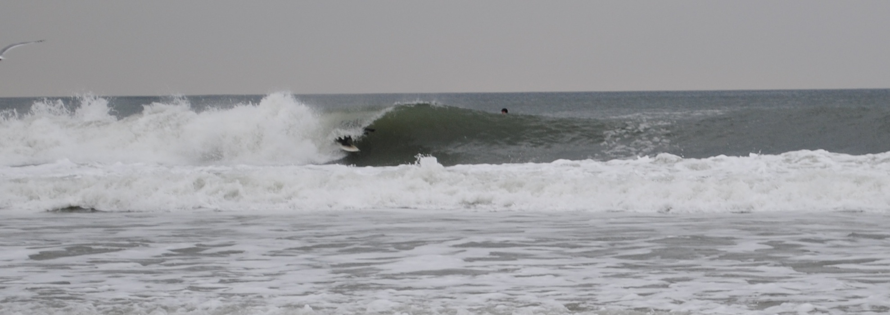
Daisy
memorable waves from the past
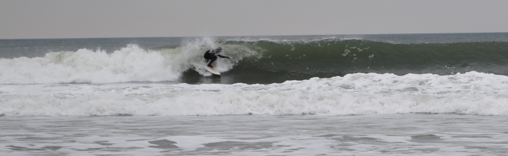
Daisy
memorable waves from the past
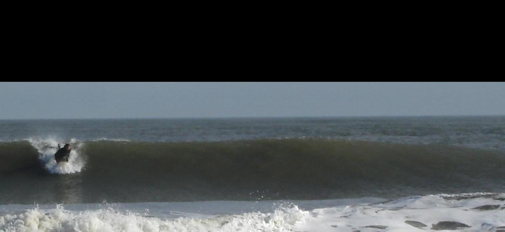
memorable waves from the past
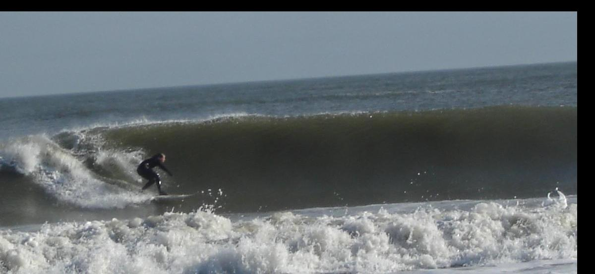
memorable waves from the past
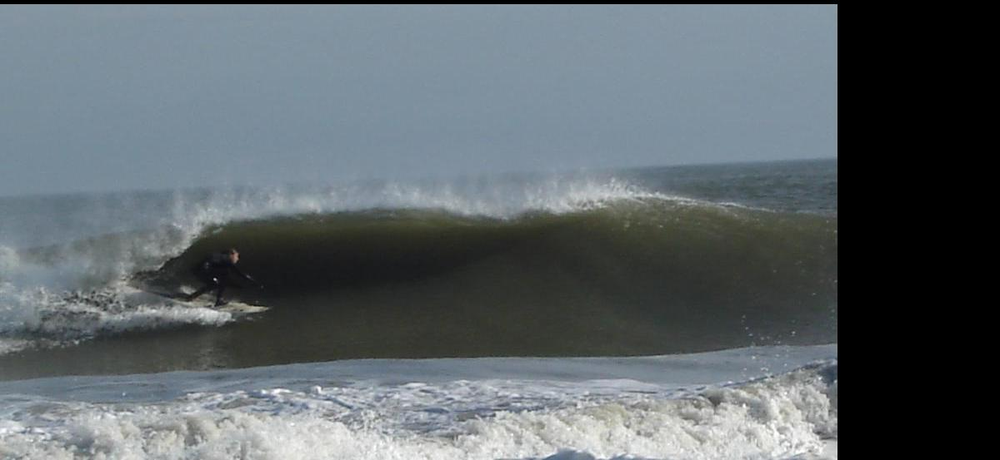
memorable waves from the past
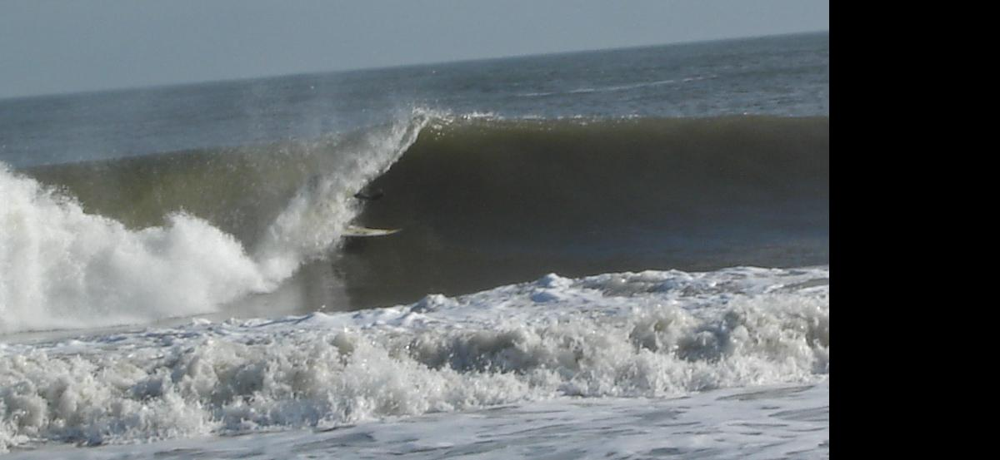
yes, i made it out.
memorable waves from the past

memorable waves from the past

another special place
memorable waves from the past

another special place
hermano

hermano

memorable waves from the past

memorable waves from the past
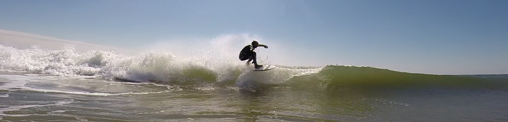
memorable trips from the past
costa rica
memorable trips from the past
rio de janeiro
memorable trips from the past
spain
memorable trips from the past
france
memorable trips from the past
ireland
memorable trips from the past
scotland
memorable trips from the past
east oz
memorable trips from the past
south oz
memorable trips from the past
puerto rico
one of many days in obsf

smallest day of this particular 2 week stretch
Longest ride: Steamer Lane

east coast trips from the past
florida
east coast trips from the past
outer banks
east coast trips from the past
maine
east coast trips from the past
rhode island
trips from the future
lake superior …
Hurricane Cristobal: 2014

beautiful track for ec surfers
Cristobal: 8/28/2014

Cristobal: 8/28/2014
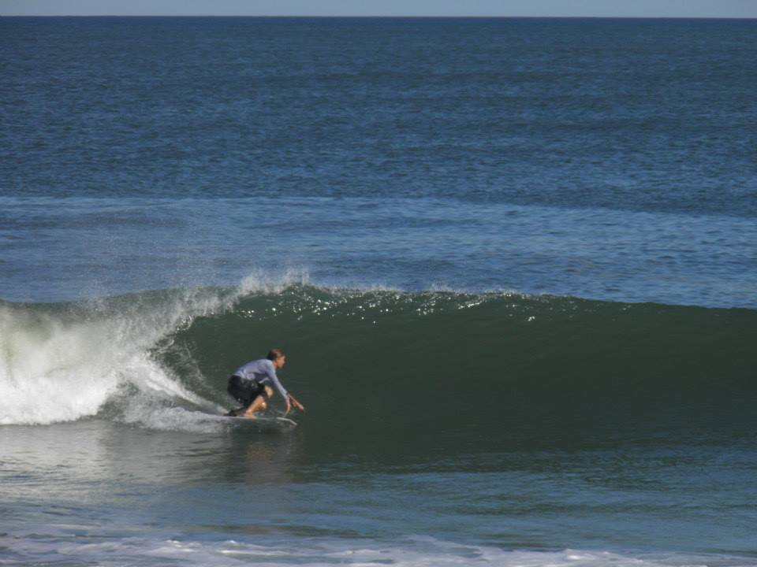
Cristobal: 8/28/2014
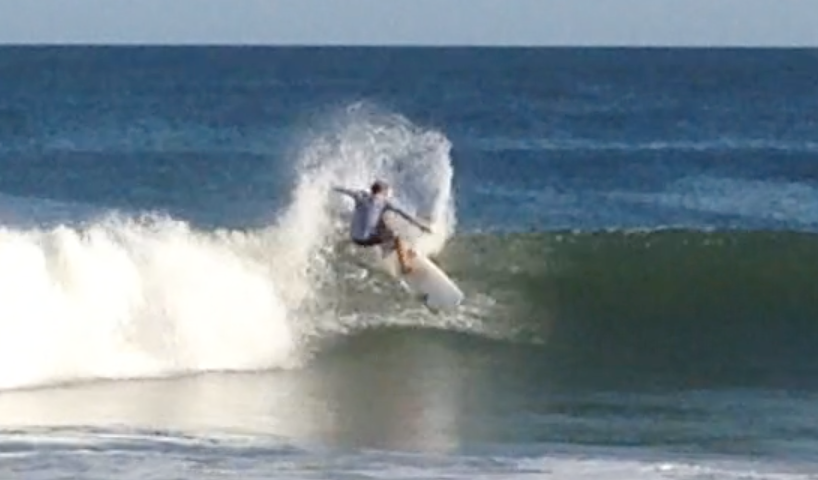
following the previous bottom turn
Cristobal: 8/28/2014
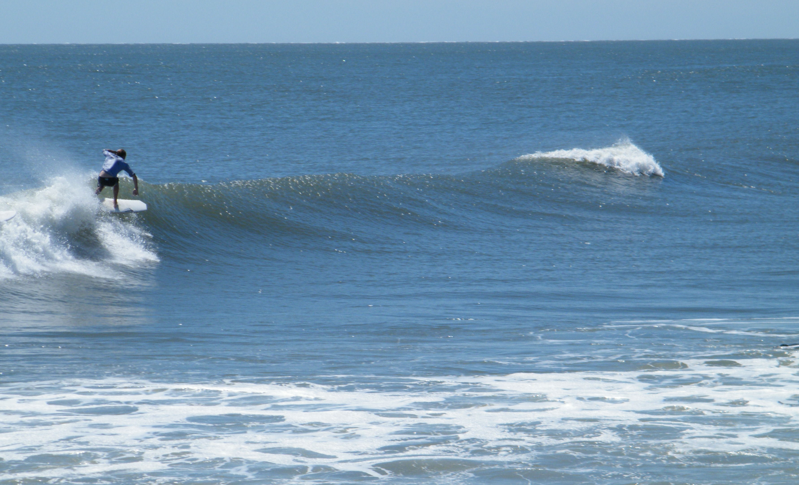
Cristobal: 8/28/2014

Cristobal: 8/28/2014
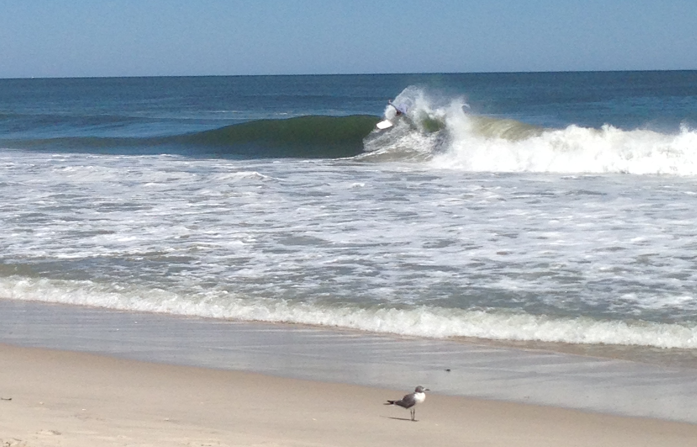
Cristobal: 8/28/2014
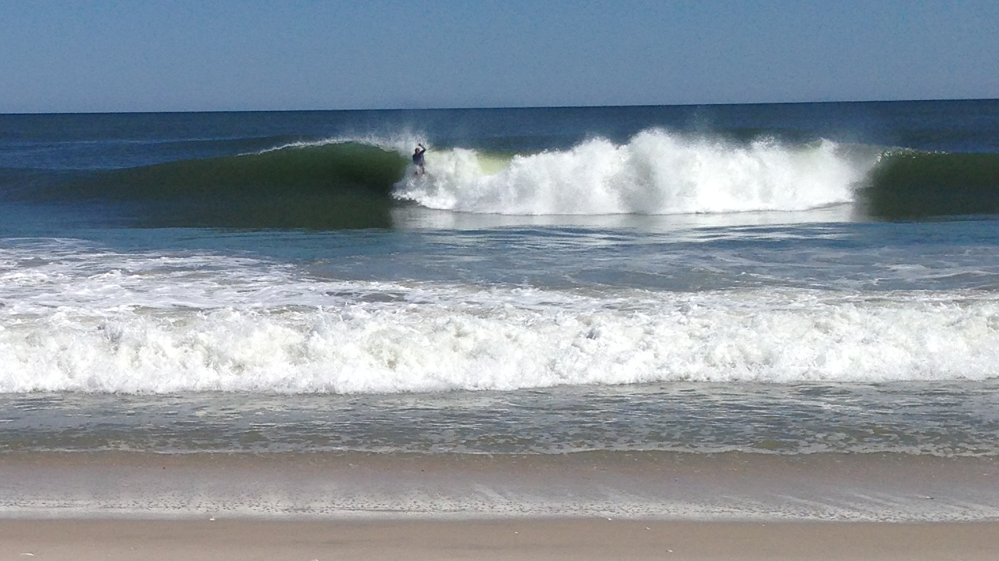
over the falls … saw this one coming a mile away but didnt paddle out far enough - still had to go!
Cristobal tube

Cristobal tube

Cristobal tube

Cristobal tube

Cristobal tube

Cristobal tube

September 1, 2014
Surfed avon-by-the-sea L jetty on the vanguard: Paddled out solo at 6am, at low tide, glassy wind-swell with the wobble that comes from onshores that die to nothing. Waist high with chest “bombs” every once in a while. Wedgy lefts toward the L jetty and softer, longer rights. Three peaks: (1) a right off the jetty (2) an A-frame in the middle and (3) a left further up the beach that I did not surf. The vanguard liked the punch in these small waves, caught them well and felt good overall, fast as usual. No problems with nose catching: bowly shape probably helped. Five other surfers by the time I left but a mellow and friendly vibe.
This spot seems very promising at low tide on anything between east and south. South seems like it would be better. Swell today seemed ESE.
Picked up a used twin-fin and rode it at Loch Arbor. The guy was obsessed with “zippi” surfboards. Zippi, the man, is interesting: I spoke with him on the phone yesterday. He convinced me to try his board … Initial results in soft Loch Arbor, waist high, were mixed. Not used to riding a twin though it paddled reasonably well for a 5’7. It feels like 2 1/4" thick with around 21" of width. A very different board than I’ve ridden in the past. Nice glide through flat sections and fast down the line ( as are twin fins ). Decent hold - waves too weak for anything conclusive but am guessing this board was more fun in those conditions than the VG would have been.
world tour surfers
earliest competitive surfers i surfed with were the lopez brothers. but we were all groms and equally unfamous. i ran over one of their friends and put a clean, red trifin tattoo in his back. 10 years old or something.
in san sebastian spain. surfer was pretty far down the line and i almost dropped in figuring this old dude wouldnt make it round the sections …. then looked one last time and “holy shit … it’s curren”. i didnt drop in and he made the section. and a few more.
gabe kling in AC - impressive backside surfing on a clean waist to chest day.
lots of guys at rocky point and pipe: john john as a grom at pipe, the mcnamara clan, sunny garcia, pancho, tom carroll, timmy curran ( at monster mush ), flynn novak and i’m sure many more i wouldnt recognize. sunny’s a good guy to talk to like someone else on here said. pancho was one of the guys i enjoyed watching most, in addition to carroll (90s and early 2000s).
and probably the best session was at biggish ocean beach sf trading waves with greg long …. just us in big a-frames on a sunny day